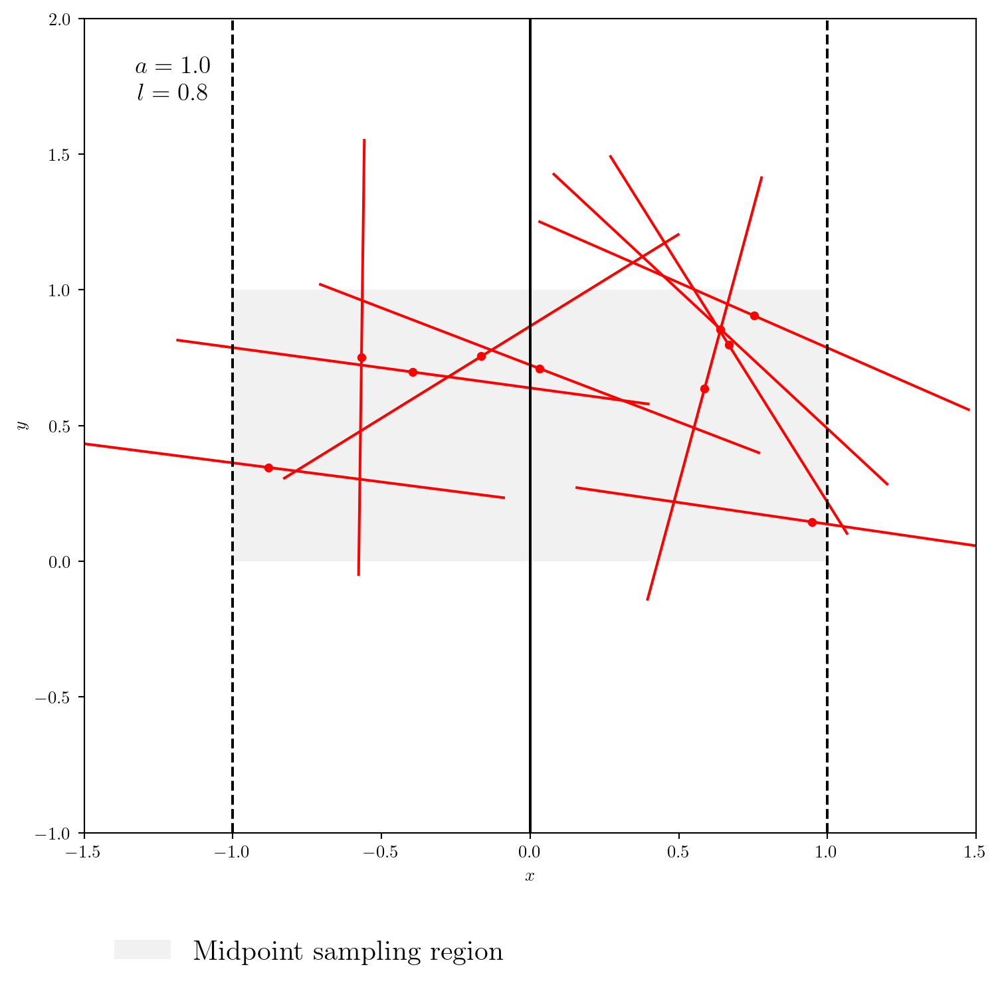
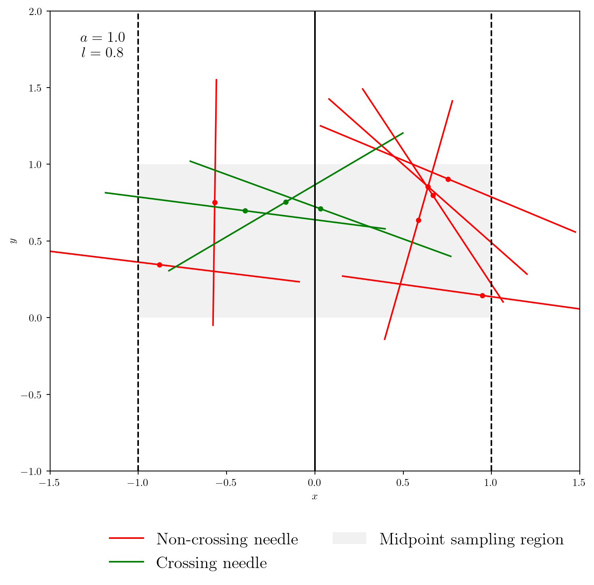
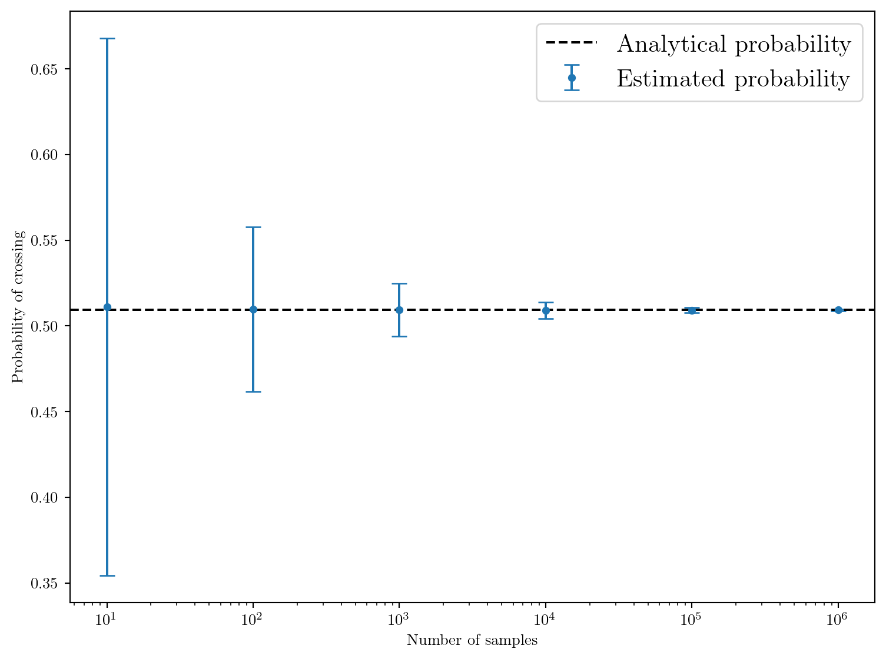
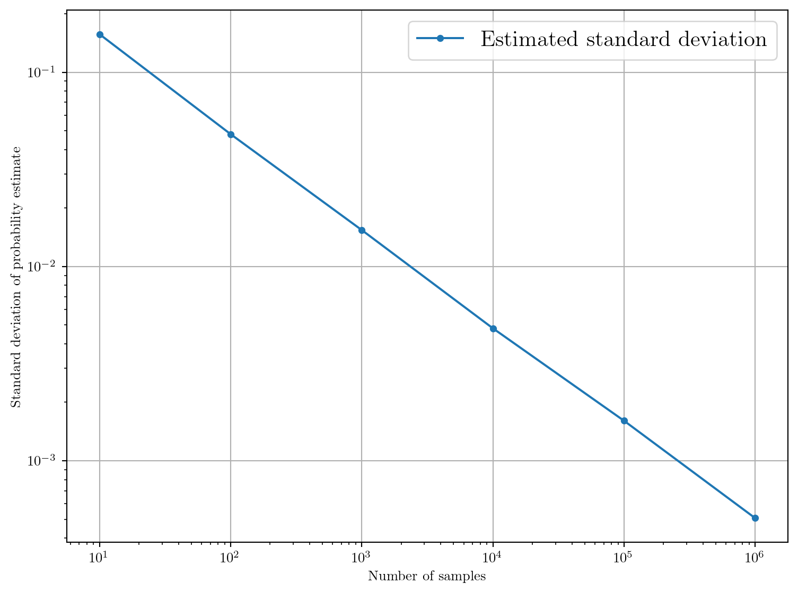
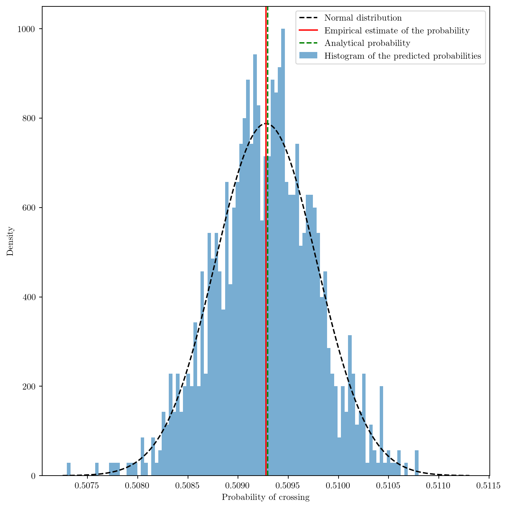
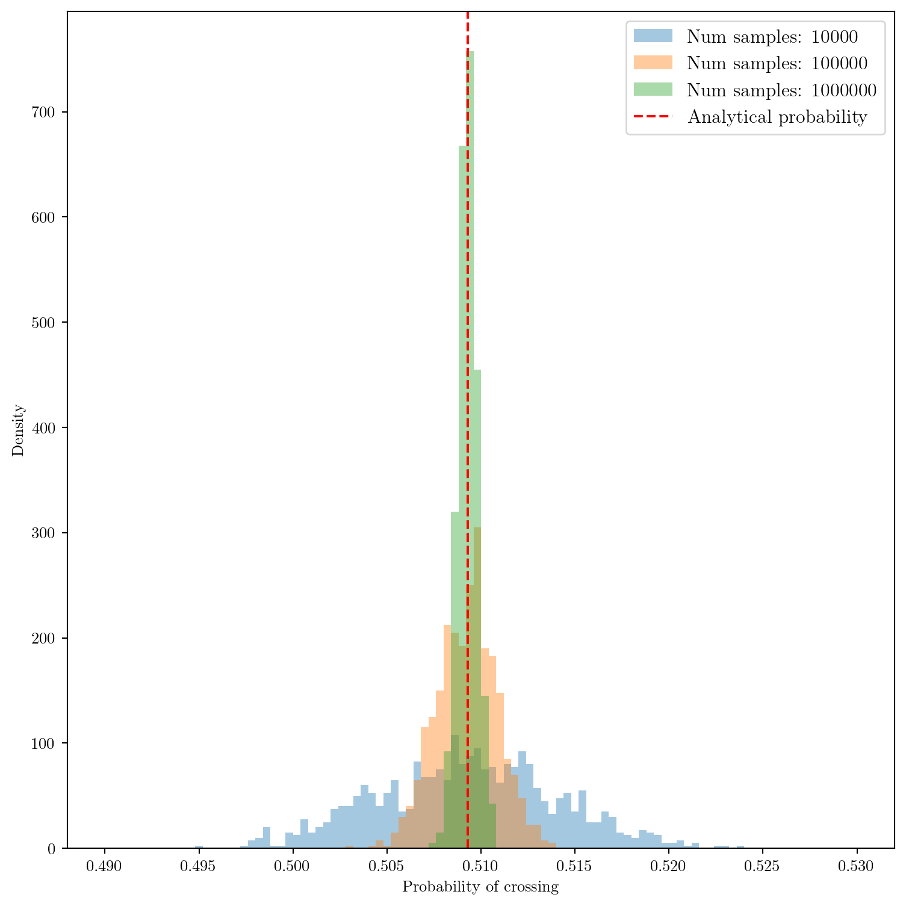
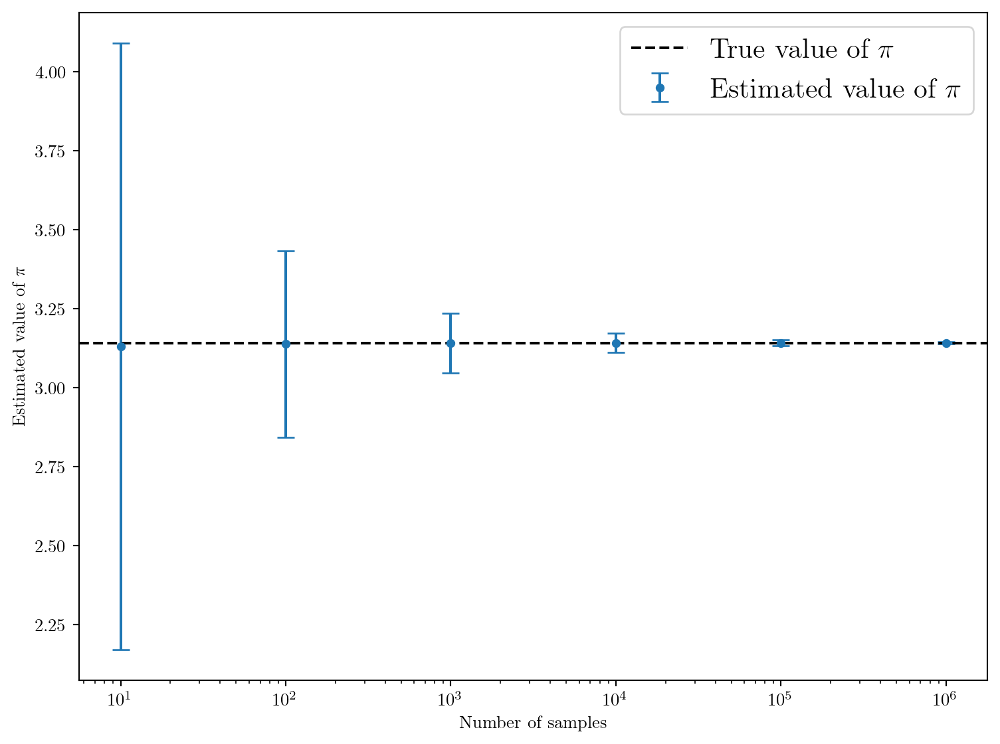

<frozen importlib._bootstrap>:241: RuntimeWarning:
scipy._lib.messagestream.MessageStream size changed, may indicate binary incompatibility. Expected 56 from C header, got 64 from PyObject
Aiguille de Buffon
Simulation de l’expérience de l’aiguille de Buffon pour estimer la valeur de \(\pi\).
Code source disponible ici
Contexte
L’aiguille de Buffon est une expérience de probabilité classique qui consiste à laisser tomber une aiguille de longueur \(\ell\) sur un plan avec des lignes parallèles espacées de distance \(2a\). Il est possible de déterminer la probabilité que l’aiguille croise une ligne en fonction de la longueur de l’aiguille et de l’espacement des lignes. Notons \(P\) cette probabilité. On peut montrer que
\[ P = \frac{ 2 \ell}{\pi a}. \]
Dans ce notebook, nous allons simuler cette expérience pour retrouver ce résultat analytique.
L’écriture de ce notebook est motivé par un exercice du cours de Physique Statistique 2024-2025 de l’Université Paris Cité que j’ai enseigné dans le cadre de ma mission d’enseignement doctorale.
Simulation de l’expérience
Commençons par écrire quelques fonctions pour simuler l’expérience de l’aiguille de Buffon.
Pour simuler le lancer d’une aiguille, nous avons besoin d’échantillonner la position de l’aiguille et son angle par rapport à un axe arbitraire. On prendra ici l’axe des abscisses.
Les fonctions sample_x et sample_y permettent d’échantillonner la position. La fonction sample_angle permet d’échantillonner l’angle. sample_needle combine ces trois fonctions pour simuler le lancer d’une aiguille. Voir script disponible ici
Notons que nous avons une certaine liberté dans les choix de modélisation du problème. Dans cette implémentation, nous supposerons la distribution suivante pour les variables aléatoires : - \(X\) (position selon l’axe des x) est uniformément distribuée entre \(-a\) et \(a\). - \(Y\) (position selon l’axe des y) est uniformément distribuée entre \(0\) et \(1\). - \(\theta\) (angle) est uniformément distribuée entre \(0\) et \(2\pi\).
Les trois variables sont indépendantes.
Les résultats ne doivent pas dépendre du choix de la distribution sur l’axe des \(y\) tant qu’elle est indépendante des autres variables. Dans le calcul analytique, nous intégrerons la distribution de \(Y\) et elle ne contribuera pas au résultat final. Le choix de l’intervalle \([0, 1]\) est arbitraire. Pour l’axe des x, nous devons nous assurer que l’aiguille peut traverser une ligne, d’où le choix de l’intervalle \([-a, a]\). Cela limite aussi l’étude à une seule ligne car les motifs se répètent périodiquement. Cela simplifie le problème en éliminant cette symétrie.
Ci-dessous, nous implémentons la fonction plot_needle pour visualiser un lancer d’aiguille.

On peut maintenant implémenter des fonctions pour déterminer si une aiguille croise la ligne \(x=0\). Nous pouvons adopter deux stratégies: - Vérifier si l’aiguille croise en utilisant les extrémités de l’aiguille (is_needle_crossing_endpoint). - Vérifier si l’aiguille croise en utilisant le centre (is_needle_crossing_middle).
np.all( is_needle_crossing_endpoint(x, angle, l) == is_needle_crossing_middle(x, angle, l))False
Calcul de la probabilité de croisement
On peut maintenant écrire une fonction pour estimer la probabilité de croisement en échantillonnant un grand nombre d’aiguilles et en comptant le nombre de croisements.
def compute_probability(num_samples, a, l):
"""
Computes the probability of crossing the line x=0.
Parameters
----------
num_samples : int
Number of samples to generate.
a : float
Half the distance between the lines.
l : float
Length of the needle.
Returns
-------
float
Estimated probability of crossing the line.
"""
x, _, angle = sample_needle(num_samples, a)
bool_crossing = is_needle_crossing_endpoint(x, angle, l)
return np.mean(bool_crossing)num_samples = 100_000
proba = compute_probability(num_samples, a=a, l=l)
print(f"Estimated probability: {proba:.4f}")
print(f"Target probability: {2*l/(np.pi*a):.4f}")Estimated probability: 0.5058
Target probability: 0.5093Les deux valeurs sont en bon accord, ce qui valide notre simulation. Nous pouvons maintenant étudier la convergence de l’estimation de la probabilité en fonction du nombre d’échantillons. En particulier, en répétant l’expérience plusieurs fois pour un nombre fixe d’échantillons, nous pouvons estimer la variance de l’estimation ce qui permettra d’estimer un intervalle de confiance pour la valeur de la probabilité.
Ecrivons d’abord la fonction sample_proba qui répète l’expérience plusieurs fois pour un nombre fixe d’échantillons.
def sample_proba(num_iter, num_samples, a, l):
"""
Samples the probability of crossing the line x=0 multiple times.
Parameters
----------
num_iter : int
Number of iterations to perform.
num_samples : int
Number of samples to generate for each iteration.
a : float
Half the distance between the lines.
l : float
Length of the needle.
Returns
-------
np.ndarray
Array of shape (num_iter,) containing the estimated probabilities.
"""
return np.array(
[
compute_probability(num_samples, a, l)
for _ in range(num_iter) # Using a for loop is not optimal here
]
)On peut maintenant répéter l’expérience pour différents nombres d’échantillons et tracer la convergence de l’estimation de la probabilité.
0%| | 0/6 [00:00<?, ?it/s] 50%|█████ | 3/6 [00:00<00:00, 22.89it/s] 50%|█████ | 3/6 [00:19<00:00, 22.89it/s]100%|██████████| 6/6 [01:26<00:00, 17.03s/it]100%|██████████| 6/6 [01:26<00:00, 14.49s/it]
On observe deux choses: 1. La moyenne de l’estimation de la probabilité converge vers la valeur analytique lorsque le nombre d’échantillons augmente. 2. L’écart-type de l’estimation diminue avec le nombre d’échantillons, ce qui est attendu car l’erreur d’estimation diminue avec le nombre d’échantillons.
Pouvons-nous quantifier cette diminution de l’erreur d’estimation? Pour cela, traçons l’écart-type en fonction du nombre d’échantillons sur une échelle log-log.

On observe une relation de type loi de puissance entre l’écart-type et le nombre d’échantillons. Pour quantifier cette relation, nous pouvons effectuer une régression linéaire sur les données log-log.
log_num_samples = np.log(num_samples_list)
log_std_proba = np.log(std_proba)
slope, intercept, r_value, p_value, std_err = stats.linregress(log_num_samples, log_std_proba)
print(f"Slope: {slope:.4f} ± {std_err:.4f}")Slope: -0.4968 ± 0.0025On observe que la variance de l’esimateur décroît en \(\propto N^{-1/2}\). Connaissez-vous un théorème important en statistique qui explique ce comportement?
C’est le théorème central limite, qui stipule que la moyenne d’un grand nombre de variables aléatoires indépendantes et identiquement distribuées suit une distribution normale dont l’écart-type diminue en \(\propto N^{-1/2}\). Essayons de le visualiser!

On peut même regarder comments l’histogramme des probabilités évolue avec le nombre d’échantillons.

Estimation de la valeur de \(\pi\)
On peut aussi inverser la relation analytique pour estimer la valeur de \(\pi\) à partir de l’estimation de la probabilité de croisement. En particulier, il est intéressant de propager l’incertitude sur l’estimation de la probabilité vers une incertitude sur l’estimation de \(\pi\). En effet on a
\[ \pi = \frac{2 \ell}{a P}. \]
En supposant que la distance \(a\) et la longueur \(\ell\) sont connues exactement, l’incertitude sur \(\pi\) est donnée par
\[ \Delta \pi = \left| \frac{\partial \pi}{\partial P} \right| \Delta P = \frac{2 \ell}{a P^2} \Delta P. \]
Plottons ce résultat.

Cela fonctionne bien! 🥳 On peut calculer l’estimation avec le plus grand nombre d’échantillons
mean_pi[-1], std_pi[-1]
print(f"Estimated value of pi: {mean_pi[-1]:.6f} ± {std_pi[-1]:.6f}")Estimated value of pi: 3.141700 ± 0.003124On retrouve la valeur de \(\pi\) à \(10^{-3}\) près avec \(10^6\) échantillons! Théoriquement, pour atteindre une précision de \(10^{-n}\), il faudrait environ \(10^{2n}\) échantillons car l’erreur diminue en \(\propto N^{-1/2}\). Mais cela devient très coûteux en temps de calcul pour des précisions élevées…
On observe qu’à mesure que le nombre d’échantillons augmente, l’histogramme des probabilités estimées devient plus concentré autour de la valeur analytique, illustrant la convergence de l’estimateur et le théorème central limite en action.
Conclusion
Dans ce notebook, nous avons simulé l’expérience de l’aiguille de Buffon pour estimer la probabilité de croisement d’une aiguille avec des lignes parallèles. Nous avons validé notre simulation en comparant les résultats numériques avec la solution analytique connue. Nous avons également étudié la convergence de l’estimation de la probabilité en fonction du nombre d’échantillons, en observant que l’écart-type de l’estimation diminue conformément au théorème central limite. Nous avons conclus en utilisant cette estimation pour calculer la valeur de \(\pi\) et son incertitude associée.